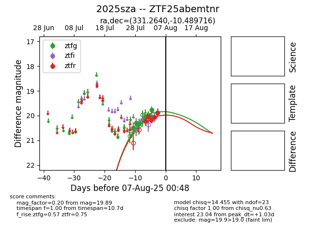

Target 2025sza at 2025-08-08 23:51, see:
FINK: fink-portal.org/2025sza
Lasair: lasair-ztf.lsst.ac.uk/objects/2025sza
ALeRCE: alerce.online/object/2025sza
TNS: wis-tns.org/object/2025sza
YSE: ziggy.ucolick.org/yse/transient_detail/2025sza
alt names
ZTF25abemtnr (ztf,fink)
2025sza (tns,yse)
PS25fzv (panstarrs)
coordinates:
equatorial (ra, dec) = (331.2640,-10.48972)
galactic (l, b) = (47.7982,-47.51636)
photometry
last ztfg=19.92, ztfr=19.82
9 ztfg, 6 ztfr detections
